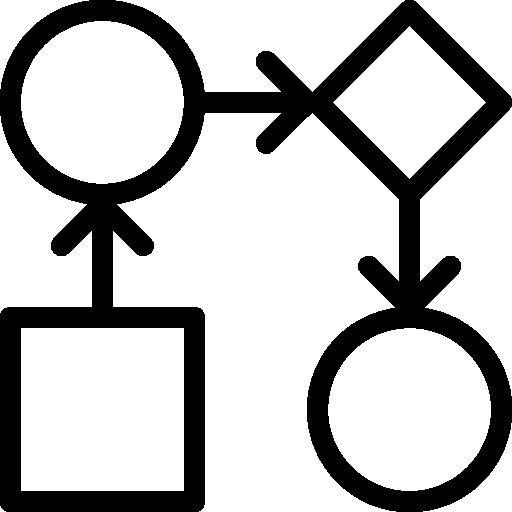

<!-- SERVICE JOB HISTORY -->
<section id="caaashistory" class="animated-card">

  <div id="caaashistory-header" class="sixteen">
    <div class="ui grid">
      <div class="column ten wide">
        <h1><i class="tasks icon"></i>History</h1>
      </div>
      <div class="column six wide">
        <div class="button-container pull-right">
          <div class="ui tiny">
            <button type="submit" class="ui button tiny" ng-click="close()">Close</button>
          </div>
        </div>
      </div>
    </div>
  </div>

  <div id="caaashistory-body">
    <div class="caaasinstanceslist">
      <!--<h2 ng-hide="noJobsMessage" style="width: 100%;text-align: center;padding: 50px 0;color: #666;">No Jobs found</h2>-->
      <script type="text/ng-template" id="caaasInstances.html">
        <div class="job-header">
          <span ng-if="metadata.active == true" class="status status-active">Is Active</span>
          <span ng-if="metadata.active == false" class="status">No Active</span>
        </div>
        <div class="job-body">
          
          <p>
            <span style="font-size: .6em;">Instance Name:</span><br />
            <span><b>{{metadata.name}}</b></span>
          </p>
        </div>
        <div class="job-footer">
        </div>

      </script>

      <ul class="job-tree" ng-model="jobhistorydata">
        <li class="job-tree-node" ng-repeat="metadata in jobhistorydata" ng-include="'caaasInstances.html'"
            ng-click="onSelectJob($index);" ng-class="{'selectJob': $index == selectedIndex}">
        </li>
      </ul>
    </div>
    <div class="executionslist">
      <div>
        <h2 ng-show="noJobsMessage">Select a formula instance to see more details</h2>
        <h2 ng-show="showNoErrors" class="errorTitle">{{errorMessage}}</h2>
        <h2 ng-show="showErrors">Executions</h2>
      </div>
      <div ui-grid="jobExecutionsOptions" ui-grid-selection ui-grid-auto-resize
           ng-if="showErrors" class="errorJobHistoryGrid"></div>
    </div>


    <div class="executionsvalue">
      <script type="text/ng-template" id="executionsvalues.html">
        <div class="job-header">
          <span class="status">Status: {{metadata.status}}</span>
        </div>
        <div class="job-body">
          <p>
            <span>Step Name: <br/><b>{{metadata.stepName}}</b></span>
          </p>
        </div>
        <div class="job-footer">
        </div>

      </script>

      <ul class="job-tree" ng-model="jobExecutionValue">
        <li class="job-tree-node" ng-repeat="metadata in jobExecutionValue" ng-include="'executionsvalues.html'">
        </li>
      </ul>
    </div>

  </div>

</section>